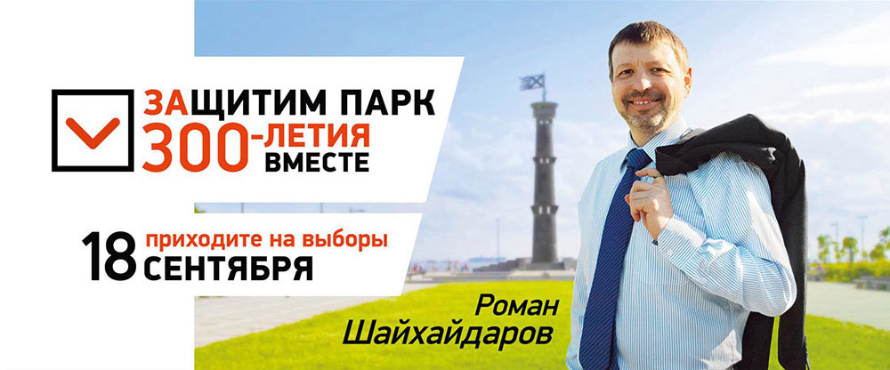

Друзья!
Меня зовут Роман Шайхайдаров, мне 43 года. Женат, воспитываю двух сыновей. Родился в Ленинграде и половину жизни прожил в Приморском районе, здесь занимаюсь общественной деятельностью.
С момента создания общественного движение «Красивый Петербург» являюсь куратором движения в Приморском районе, которое объединило более 50 000 горожан.
Вместе мы решаем насущные проблемы жителей, связанные с благоустройством дворов и парков, удобством транспортной инфраструктуры, экологическим состоянием водоемов, ЖКХ, безбарьерной среды, взаимодействием с районными и местными властями. Это больше 30 тысяч решенных проблем городской среды Петербурга.
Мой дом – Приморский район! По этому, защита парка 300-летия от застройки один из главных вопросов в нашей ежедневной деятельности. Благодаря организованной общественной кампании в защиту парка нам удалось объединить 90 000 жителей, провести митинг и утвердить резолюцию, но чиновники не слышат нас и борьба продолжается.
Я иду в депутаты, чтобы продолжить свою деятельность по защите от застройки парка 300-летия, сквера на Саушкина 112, Удельного парка и других проблем Приморского района с большей эффективностью. Я горжусь тем, что могу быть полезен своему району, своему городу и своей стране.
Биография
Родился в Ленинграде в 1963 году. Женат, два сына.
-
1987-1989 гг. - ученик СПТУ-125, станочник широкого профиля 3 разряда, оператор станков с ЧПУ 4 разряда.
-
1991-1993 гг. - начальник отдела снабжения ТОО «Раунд-Трейд» (ресторанный бизнес).
-
1993-1995 гг. - коммерческий директор ТОО «Невская нефтяная компания».
-
1995-2003 гг. - заместитель ген.директора, ген.директор ООО «Патриот-1» (сеть фото-магазинов «Кодак»).
-
2003 – 2007 - заместитель ген.директора ООО «БАЛТИК-ЛАЙТ» (рекламно-производственная фирма).
-
С 2006 г. по н.вр. - член правления Ассоциация малых предприятий наружной рекламы (АМПНР)
-
2007-2009 гг. - генеральный директор ООО «СлавИнвест».
-
2007- 2010 гг. - президент Ассоциации консалтинговых фирм Санкт-Петербурга.
-
С 2007 г. по н.вр. - член Общественного Совета по развитию малого предпринимательства при губернаторе Санкт-Петербурга, председатель комиссии по рекламе и информации.
-
С 2008 по н.вр. - член правления НП «Партнерство Развития Дизайна».
-
2009 - 2014 гг. - депутат муниципального совета МО Оккервиль, заместитель главы муниципального образования, заместитель исполняющего полномочия председателя. Заместитель председателя комиссии по связям с общественными организациями и средствами массовой информации, заместитель председателя бюджетно-финансовой комиссии.
-
С 2010 г. по н.вр. - активист общественного движения, выступающего за здоровый образ жизни «Энергия Жизни», организатор акций «Зарядки на Дворцовой» и «Физкульт-мобиль».
-
С 2013 г. по н.вр. - активист, куратор по Приморскому району общественного движения «Красивый Петербург».